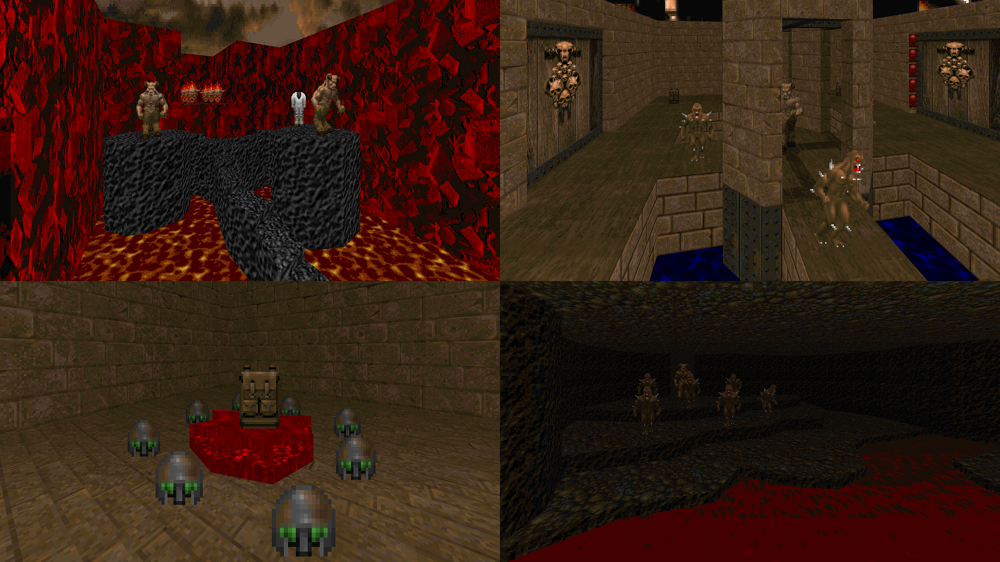

DOWNLOAD LINKS



| Year | 2010 |
| IWAD | Doom II |
| Source port | Limit-removing (ZDoom recommended) |
| Game mode(s) | Single-player, coop |
| Map(s) | MAP01-33 |
Prayers of Armageddon was the first serious wad project I ever worked on. For better or worse, I made the mistake of making it a full 32-level megawad (with an extra 33rd map).
And the end result speaks for itself. Almost every level here is a low-effort, cramped, bland, undetailed, pseudo-non-linear atrocity with no good gameplay to speak of. That’s honestly all I can think to say.
Play this at your own risk.